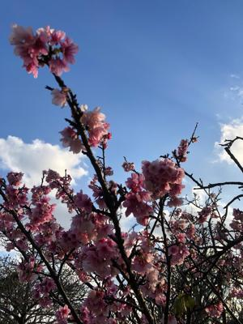
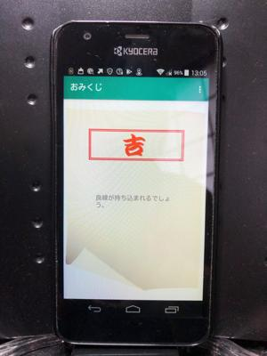
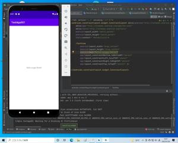
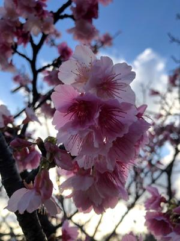

うるがいの話 ある日
最新: 末吉【うるがいの話 ある日】とは 一日だけのプログです
『うるがいの話』の最新一日だけのプログで、通信料が少なく経済的だ。カニの画像をクリックすると全ての日付が載る『うるがいの話』サイトを表示します
|
|
【うるがいの話】 うるがい(ｳﾙｶﾞｲ urugai)とは、『もずくがに』の名前でとても大きくなります。 |
|---|---|
|
|
【カミマヤーの話】 猫のことを方言でマヤーといいます。カミマヤー（kamimayaa）とは、神の猫のことです。 |
|
【タナガーの話】 たながー（ﾀﾅｶﾞｰtanagaa）とは手長えびのことで、何種類かあり大きいのは車 エビぐらいになります。 |

|
【ぶながぁの話】 ぶながー(bunagaa)とは、赤い髪の毛、赤い身体、そして身長は１ｍ２０ｃｍ ぐらい、川の蟹を食べているの目撃された。場所は沖縄県国頭郡大宜味村のと ある村僕の隣近所に住んでいる爺さんから、聞いた話です。 |
|
|
【ギーマの話】 ギーマ(giima)とは、山原の里山に咲くスズランに似た、 花を付けます。実は食べられます、 気が付くと口の周りが紫になっています。 |
2022年01月21日 (金）末吉
16:09

首里の達磨寺でおみくじを引いた。『末吉』：末吉の末は、末広がりの末とい
うことで後々良くなる運勢なのです。ホー、去年は『大吉』だったものの２月
に七転八倒した。たまたま、アンドロイドスマホのスタディを終える。アプリ
が『おみくじ』、吉しかでないが。２０１９年４月に発行された本（作って楽
しむプログラミング Androidアプリ超入門）だが、立ち上がりのハローワール
ドの画面が、動かなかった。本が前提としてアプリのバージョンと現行のバー
ジョンとのギャップのためである。さすが、スマホである。しかし、本のタイ
トルは詐欺見たい、本そのものは良本であるがこれで超入門とは・・・・。
 
昨日、ジョギンギ途中で８分咲きの桜を見かけた、綺麗っすね。

１６時００分 ビットコインの総資産 ￥１２、８０８↓ えー